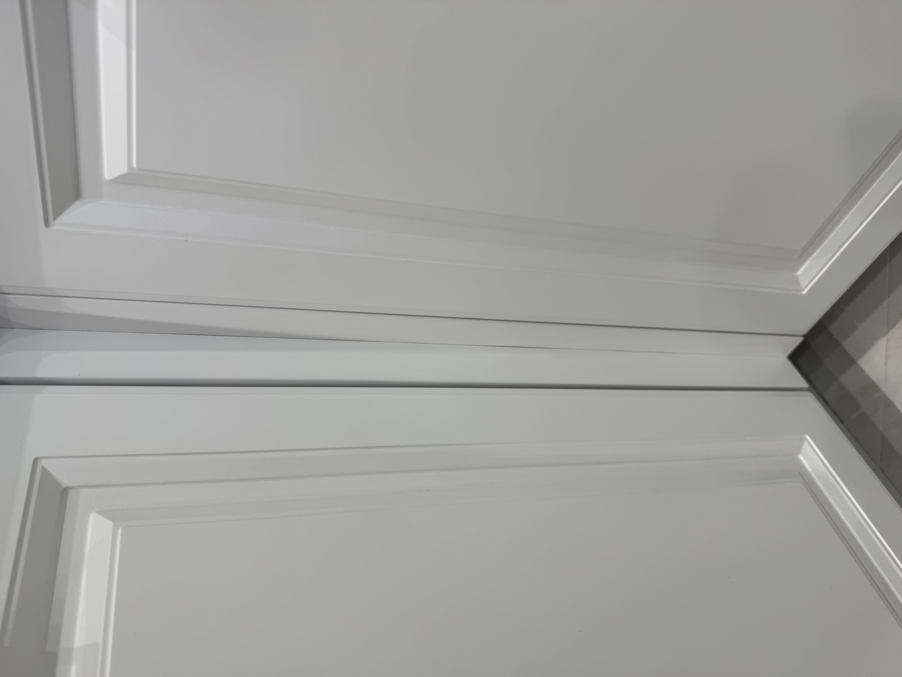
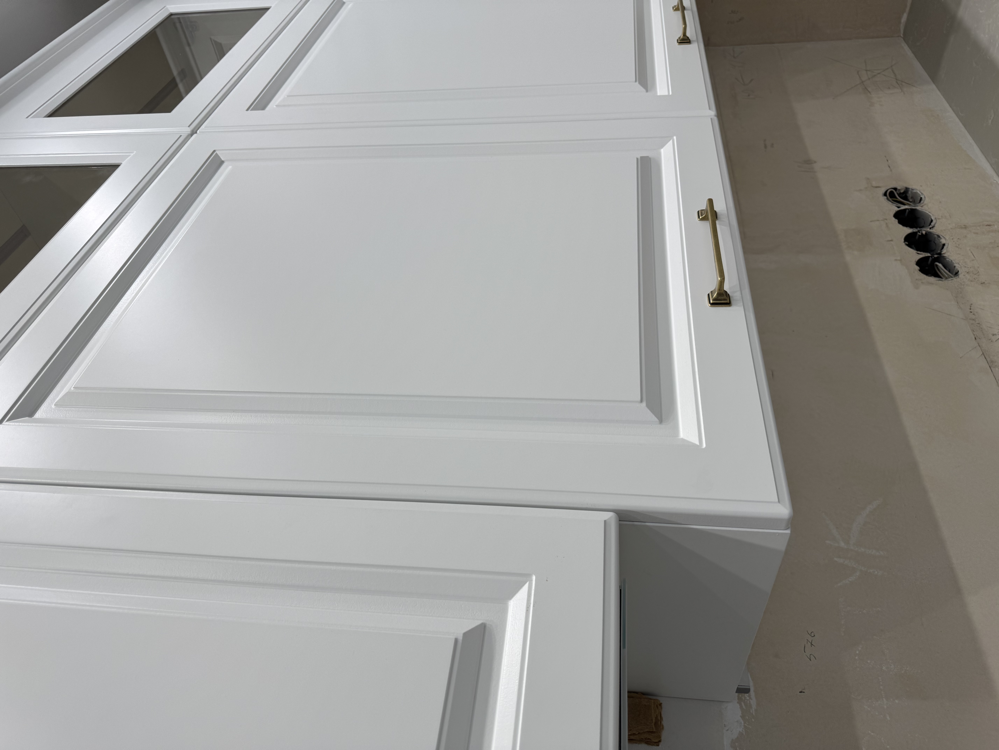
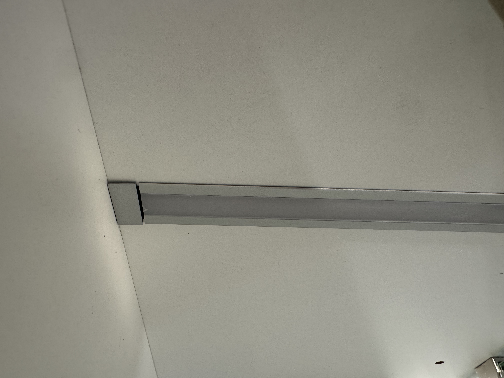
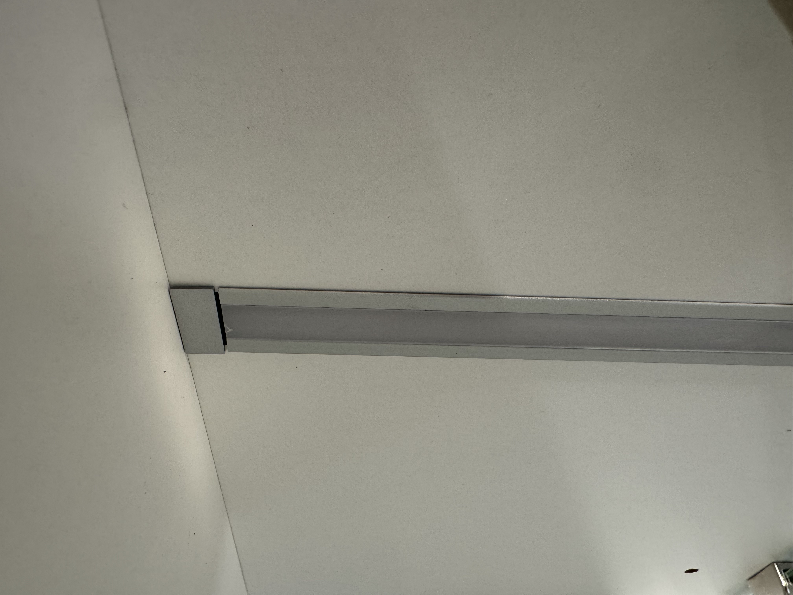

| 0 |
Духовой шкаф |

|
Размазанная краска или подтек с внутренней стороны стекла. |
| 1 |
Шкаф посудомойки |
|
Царапины на внутренней стороне фасада. |
| 2 |
Нижний напольный шкаф, между духовкой и посудомойкой |
|
Отклеивающаяся пленка фасада. |
| 3 |
Верхний напольный шкаф, между духовкой и посудомойкой |
|
Темные пятна, стертые углы у фасада. При установке мастера сказали, что это все уйдет после уборки или с помощью растворителя. После протирания пятна не ушли, при приблежении видно, что краска отсутствует. Растворителем можем испортить лакокрасочное покрытие, тем самым лишимся возможности замены фасада. |
| 4 |
Верхний напольный шкаф, слева от духовки |
|
Скол на краске. На третем фото видно как пытались замазать изъян |
| 5 |
Нижний напольный шкаф, слева от духовки |
|
С внутренней стороны фасада отклеивается пленка. |
| 6 |
Угол. Соединение напольных угловых шкафов |

|
Имеются сколы на углах. |
| 7 |
Шкаф под мойкой |

|
Скол на фасаде. |
| 8 |
Навесной шкаф, нижний ряд, крайний справа над мойкой |
|
Царапина на фасаде от упавшей короны. При демонтаже пенала, мастер оставил корону и закрепил ее, в подвешенном состоянии, на малярный скотч. Со временем скотч отошел, корона упала и поцарапала фасад. |
| 9 |
Навесной шкаф, верхний ряд, крайний слева над мойкой, угловой |
|
Царапины и скол на фасаде. |
| 10 |
Соединение короны, внутренний угол. |
|
Царапина. Шов соединения короны не прокрашен. |
| 11 |
Угол. Соединение навесных угловых шкафов. |
|
Царапина на углу, также присутствует скол. |
| 12 |
Навесной шкаф, нижний ряд, слева от угла. |

|
Точка и царапины на фасаде. Внутри шкафа - потертость на основании, непонятные желтые пятна. |
| 13 |
Навесной шкаф, нижний ряд, справа от вытяжки. |

|
Трещина в лакокрасочном покрытии, приклеившийся сгусток краски. При увеличении видны царапини снизу. |
| 14 |
Навесной шкаф, нижний ряд, слева от вытяжки. |
|
Трещина/скол в лакокрасочном покрытии фасада и шкафа. |
| 15 |
Навесной шкаф под вытяжку. |
|
Царапины на фасаде. |
| 16 |
Соединение короны над вытяжкой. |

|
Корона соединена с отклонением по высоте, шов не прокрашен. Присутствуют царапины. |
| 17 |
Крайний левый навесной шкаф с стеклянными дверцами. |
 

|
Царапина на фасаде. На дверцах изнутри плохо обрезано лакокрасочное покрытие или не обработан край (пленка - видео). Внутри шкафа зазор у диодной ленты. |
18 |
Соединение короны, левый внешний угол. |
|
Шов соединения короны не прокрашен. |